The whole story in 20 frames
The storyboard for the full film, from the lamppost to the sky. Open the storyboard
-
1
A balloon on a lamppost
Wide
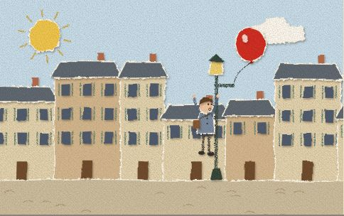
On his way to school, Pascal spots a red balloon caught on a lamppost and climbs up to set it free.
-
2
No balloons on the bus
Medium
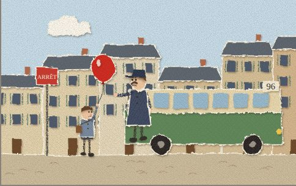
The bus conductor shakes his head: no balloons allowed. The bus pulls away without him.
-
3
Running late
Tracking
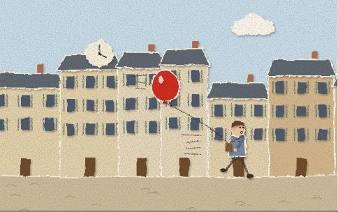
So Pascal runs the whole way to school, the balloon bobbing along behind him.
-
4
Sharing umbrellas
Medium
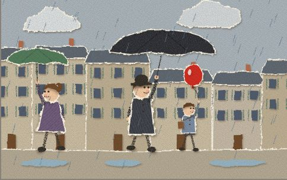
Walking home in the rain, Pascal ducks under strangers' umbrellas so the balloon stays dry.
-
5
Out the window
Medium
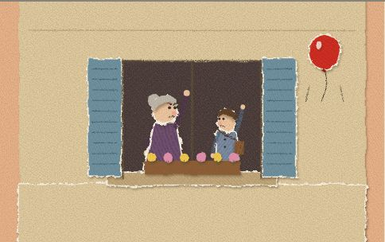
At home, his grandmother wants nothing to do with it and lets the balloon out of the window.
-
6
Waiting at the window
Medium
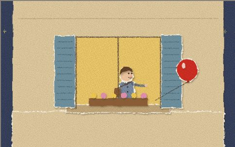
But the balloon doesn't fly away. It waits outside all night, and Pascal lets it back in.
-
7
It follows by itself
Wide
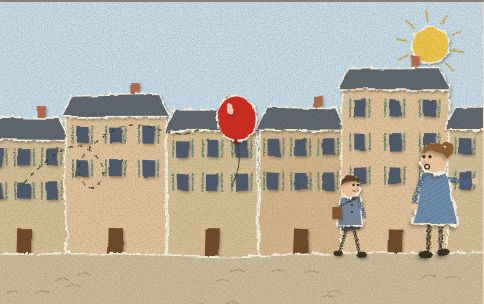
Next morning it follows him down the street on its own, with nobody holding the string.
-
8
Chasing the bus
Tracking
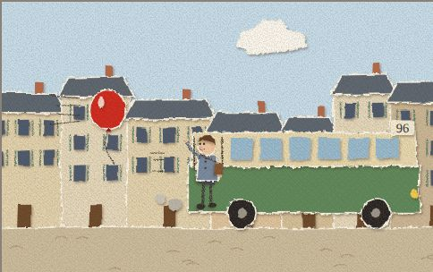
When Pascal takes the bus, the balloon chases it all the way to school.
-
9
Uproar in class
Wide
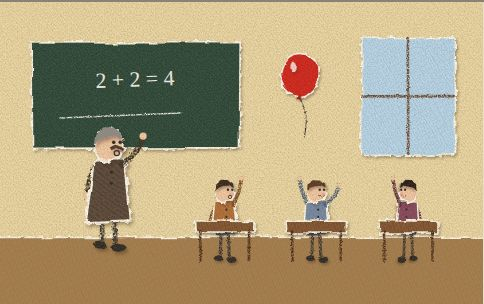
It floats into the classroom. The children cheer and the lesson falls apart.
-
10
The headmaster
Wide
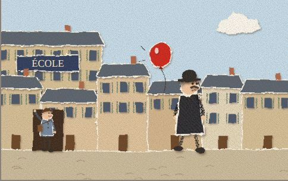
The headmaster locks Pascal in his office, but the balloon pesters him down the street until he lets the boy go.
-
11
The girl with the blue balloon
Medium
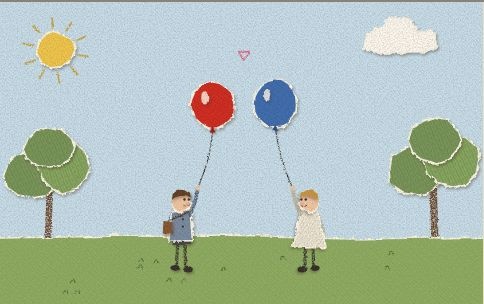
Pascal meets a girl with a blue balloon. The two balloons can't stop bobbing toward each other.
-
12
Sunday at church
Wide
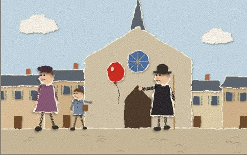
On Sunday it follows Pascal and his mother into church, and the beadle marches them straight back out.
-
13
Outside the bakery
Wide
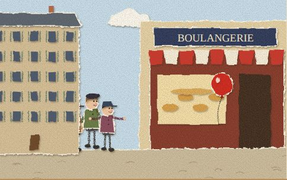
Pascal leaves the balloon outside the bakery while he buys bread. A gang of boys is watching from the corner.
-
14
Snatched!
Wide
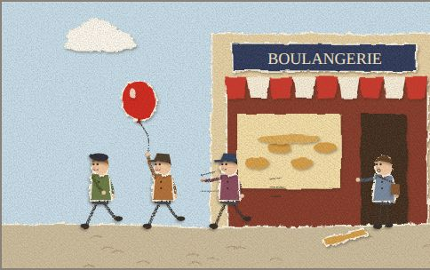
The boys grab it and run. Pascal drops his bread and gives chase.
-
15
The rescue
Medium
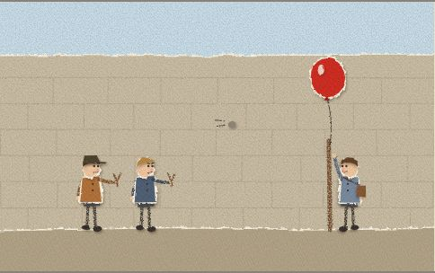
He finds it tied up in a courtyard where the boys are taking aim, and he pulls it free.
-
16
Down the steps
Wide
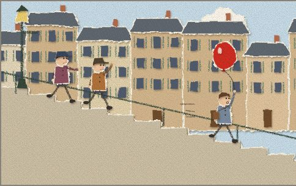
They run down the steep steps of Ménilmontant with the whole gang close behind.
-
17
Cornered
Wide
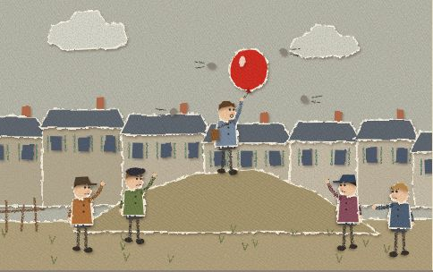
The boys corner them on a patch of waste ground and start throwing stones.
-
18
The balloon falls
Close-up
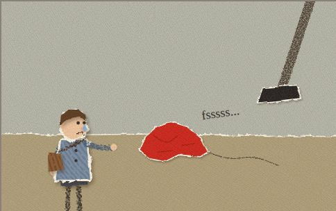
A stone hits. The balloon slowly shrinks and sinks, and one of the boys stamps on it.
-
19
Every balloon breaks free
Wide
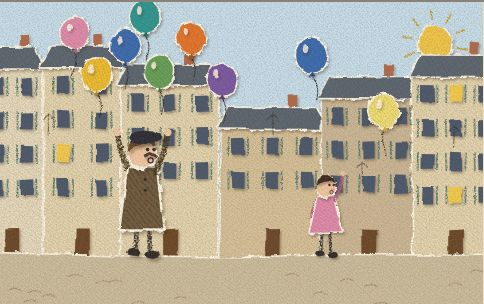
All over Paris, balloons slip free from vendors, windows and children's hands.
-
20
Up over Paris
Wide
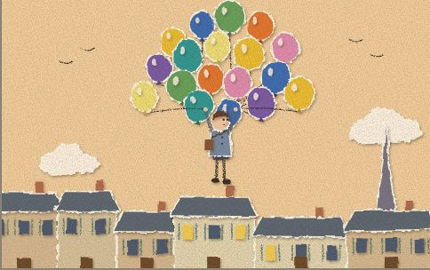
They gather around Pascal. He holds on tight, and they carry him up over the rooftops of Paris.